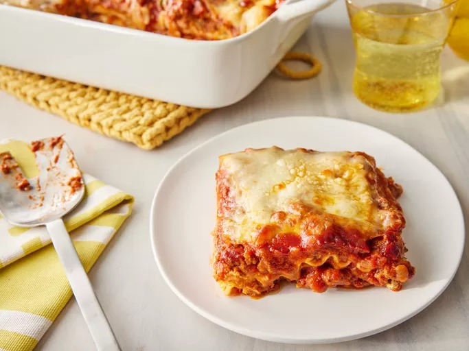

World's Best Lasagna

When John Chandler submitted this lasagna recipe to Allrecipes more than
20 years ago, he had no idea how successful it would become. One of our
top-performing recipes of all time, World's Best Lasagna racks up more
than 7 million views per year and has ranked among the most popular
lasagna recipes on the internet for two decades. Unfortunately, John
unexpectedly passed away at 53 years old — read all about his life and
legacy here. Make our most popular lasagna today to find out what all the
fuss is about!
Ingredients
- Sweet Italian sausage
- Lean ground beef
- 1 onion
- 2 cloves of garlic
- 1 can of crushed tomatoes
- 2 cans of tomato sauce
- 2 cans of tomato paste
- 2 tablespoons of white sugar
- Fresh parsley
- Dried basil leaves
- Salt
- Italian seasoning
- Fennel seeds
- Black pepper
- Lasagna noodles (store-bought or homemade)
- Parmesan cheese
- Mozzarella cheese
- Ricotta cheese
- 1 egg
Steps
- Make the meat sauce.
- Cook the noodles.
- Make the ricotta mixture.
- Layer the lasagna according to the recipe instructions.
- Cover with foil and bake.
- Let the lasagna rest before serving.